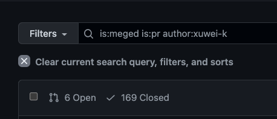
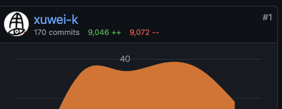

class: center, middle # アルプでの<br/>Scala 3 移行 <https://alp.connpass.com/event/239935/> Scalaを使ったSaaSプロダクト開発の<br/>裏側お見せします！ 2022/3/4 --- class: middle <img src="image/xuwei.gif" alt="icon" style="zoom: 0.3" /> - twitter [@xuwei_k](https://twitter.com/xuwei_k) - github [@xuwei-k](https://github.com/xuwei-k) - blog <https://xuwei-k.hatenablog.com> --- class: middle ## 近況 - 相変わらず某社でScala書く仕事してます - もう3年経った - 家に引きこもっている - 最近アルプで副業はじめた - 2022年2月くらいから - OSS活動も地味に続けてるが、話すと時間なくなるので省略 - 例えばscalafix頑張ったり - [blog1](https://xuwei-k.hatenablog.com/entry/2022/02/11/160802) [blog2](https://xuwei-k.hatenablog.com/entry/2022/02/14/152706) --- class: middle ## 副業？ - アルプ内の某知り合いに誘われる - 「とりあえず最初は好きなことやってていいよ」 - 本当に好きなことやって過ごす --- class: middle --- class: middle  --- class: middle  --- class: middle, center ## えっ、働きすぎ・・・！？ --- class: middle ## 主にやっていること - buildの整理改善、依存アップデート - リファクタ - レビュー - Scala自体のアップデートやその準備 --- class: middle ## アルプのScalaの現状 - 自分が入ったときには既にScala 2.12から2.13移行がわりと進められていた - それの残りを手伝って、そろそろ2.13移行は終わる? --- class: middle ## アルプのScalaの現状 - AWSのEMRのApache Sparkがまだ未対応なのでいずれにせよ2.12完全切り捨てが無理 - 2.13終わらないうちから、勝手にScala 3対応やり始める(!?) --- class: middle ## Scala versionアップデート<br>に向けてやること これは一般論。Scala 3に限らない - 1: 依存ライブラリ - 調査と整理とアップデート - 2: コンパイル通す - 3: テスト通す 通常1 => 2 => 3という順番だが<br/>一部並列して実行可能 --- class: middle ## Scala versionアップデート<br>に向けてやること - ある程度対応進んだら？あるいは最初から？ちゃんとCI用意しましょう - そうしないと通らないコードが増えてしまうので - 先ほどの手順実行時、古いversionでのbuildは引き続き維持 - 徐々に行えるようにするべき - 新しいversionで本番で安定して動いたら、初めて古い方のビルド消す？ --- class: middle ## Scala 3の超基本 (2.13と比較して) - ソース互換はそれなりにある - Scala 2でオプション指定すれば3で非推奨になるものが事前にある程度わかる - 関連scalafix作ったりした - バイナリ互換は微妙にある(詳細は複雑) - Scala 3は2.13のlibrary.jarに依存 - macro, reflectionは全く互換ない - macro annotationやcompiler pluginも --- class: middle ## 依存ライブラリ調査 - Scala 3向けでリリースされてないものは何か? - その中でmacroやreflectionに依存しているものは? - メンテされてないものはやめることも検討? - リリースされてなくても for3Use2_13 でコンパイルは通せるか？ - その方法で、とりあえず通せるものと、通せないものがある - macro使ってたり、その他特殊なケースはだめ --- class: middle ## 段階的にコンパイル通す<br/>テクニック - CrossVersion.for3Use2_13 - -Xignore-scala2-macros - conflictWarning - --no-warnings - -Wconf --- class: middle ## 段階的にコンパイル通す<br/>テクニック - libraryDependencySchemes - -source:3.0-migration - -Ykind-projector - -Xsource:3 - scalaBinaryVersionやCrossVersion.partialVersionによる分岐 - Scala versionで分岐して一部のtestだけskip - 他にもいっぱいあった気がするが・・・ --- class: middle ## CrossVersion.for3Use2_13 - Scala 3のバイナリがなくても2.13のバイナリを無理やり使う設定 - 最終的に本番で動かす時までには全て消したほうが望ましいが、とりあえず先にコンパイル試していきたいなら有効 --- class: middle ## -Xignore-scala2-macros Scala 2のmacro呼び出しがあっても、とりあえずそこを???的なものにScala 3 compilerに置き換えてもらって、無理やりコンパイルだけ通す --- class: middle ## sbtのconflictWarning ```scala // `_3` と `_2.13` のものが混ざると依存解決時点でエラーになるが // Scala 3の場合は一旦は警告のみにし、エラーにはしないようにする。 // TODO `_3` と `_2.13` のものが混ざった場合 // バイナリ互換が保証されず // 最悪実行時にエラーになる可能性があるので、 // 本格的にScala 3移行するときまでには、 // この抑制の設定がなくてもビルド可能になるように修正する conflictWarning := { if (scalaBinaryVersion.value == "3") { // ウザかったらwarnより下げてもいいぞ！ ConflictWarning("warn", Level.Warn, false) } else { conflictWarning.value } } ``` --- class: middle ## --no-warnings - 文字通り、Scala 3で警告を一切出さないオプション - コンパイルエラーが大量過ぎる場合、警告修正は後回しにしたく、邪魔でしかないので --- class: middle ## -Wconf - 警告内容によって柔軟に抑制その他色々できる - Scala 2でも3でも使える - --no-warning 付与しつつ、エラーがほぼ修正終わったら、優先して直したい警告、一旦放置したい警告、などに分けて順次修正するのに --- class: middle ## libraryDependencySchemes - Scala 2でも発生するので3に限った話ではない - scala-xmlやscala-parser-combinatorsあたりがよく引っかかる？ - バイナリ互換が無いものが混ざってるかもしれないが、とりあえず雑に最新を採用してしまう設定にしたいなら以下のように設定 ```scala libraryDependencySchemes += "org.scala-lang.modules" %% "scala-xml" % "always" ``` - 最終的には本当にバイナリ互換あるのか？しっかり確認した方がいいぞ！ --- class: middle ## -source:3.0-migration デフォルトでエラーになってしまうものが、一旦警告で済むようになる。 例: Functionの括弧が必要な部分など --- class: middle ```scala scala> val f = { x: Int => x } -- Error: ---------------------------------------------------------------------- 1 |val f = { x: Int => x } | ^ |parentheses are required around the parameter of a lambda |This construct can be rewritten automatically under -rewrite -source 3.0-migration. ``` --- class: middle ## -Ykind-projector 完全に同一ではないが、Scala 2のcompiler pluginであるkind-projectorの機能を提供してくれるオプション --- class: middle ## -Xsource:3 - Scala 2.12や2.13の最新で設定可能 - compilerがScala 3の挙動に少し近くなる - Scala 3の一部のsyntaxがScala 2でも使用可能になる - 恒久的に設定しなくても、少し試してみると移行準備にはなるぞ --- class: middle ### ビルドファイルでversionによる分岐 ```scala scalacOptions ++= { if (scalaBinaryVersion.value == "3") { Seq("-Ykind-projector") } else { Nil } } ``` --- class: middle ### ビルドファイルでversionによる分岐 変数束縛する場合はさらにこれを `Def.setting` で包むなど ```scala val deps = Def.setting( scalaBinaryVersion.valueなどのKey使った定義 ) // 他のところ // `.value` つけて呼び出し libraryDependencies ++= deps.value ``` --- class: middle ```scala libraryDependencies ++= { if (scalaBinaryVersion.value == "3") { Nil } else { Seq(compilerPlugin( "org.typelevel" % "kind-projector" % "0.13.2" cross CrossVersion.full )) } } ``` --- class: middle Scala 3の場合だけskipするのをtest class単位で設定 ```scala Test / testOptions ++= { if (scalaBinaryVersion.value == "3") { // 変更頻度が高い場合、 // これもconfigから読むようにすると良い？ val excludeTestNames = loadScala3Config("exclude_tests").toSet Seq( Tests.Exclude(excludeTestNames), ) } else { Nil } } ``` - <https://github.com/sbt/sbt/blob/v1.6.2/main-actions/src/main/scala/sbt/Tests.scala#L89-L98> --- class: middle ## sbtのproject毎に徐々に<br>対応するためのテクニック 例: sbtのsub projectが複数あって - a1, a2: testまで全部通る - a3: Test/compileは通るがtest通らない - a4: main側のcompileだけ通る - a5: main側のcompileすら通らない この時sbtに渡すべき引数とは？ --- class: middle ``` sbt \ "all a1/Test/compile a2/Test/compile a3/Test/compile a4/compile" \ "all a1/test a2/test" ``` --- class: middle <https://github.com/sbt/sbt/blob/v1.6.2/main/src/main/scala/sbt/internal/CommandStrings.scala#L36-L42> ``` sbtのshell > help all all <task>+ Executes all of the specified tasks concurrently. ``` --- class: middle - アルプにおけるsbtのsub projectは60以上ある - 先ほどのsbtのallに渡す引数生成がだるい - 次どこをコンパイル通せばいいのか？が分かりにくい --- class: middle やりたいことや方針 - どこがScala 3対応済、未対応なのか？を可視化したい - できるだけ細かくやっていきたい - sbtのallに渡す引数を半自動で生成したい - 次にどのsub projctの対応をやればいいのか？がわかるようにしたい --- class: middle - とあるsbt pluginを使いつつ拡張した仕組み定義 - https://github.com/dwijnand/sbt-project-graph - https://gist.github.com/xuwei-k/4469101194f6a192eb3a1c71444741ea --- class: middle <embed src="./image/project-graph.svg" type="image/svg+xml" /> --- class: middle ## Scala 3対応の現状 - Spark除いてtestコード含めてcompileは通りそうな状態 - これからtest通していく予定 - 実際に動かすには、結局ライブラリ待ちも多少ある - 出したpull req 60個以上 --- class: middle ## Scala 3関連で具体的にやったことをひたすら話していくよ - +と-は変更行数です - `#` のものはpull req番号だが、資料作る都合で付けただけ --- class: middle 依存ライブラリ系 <ul> <li class="s">全く使っていない依存ライブラリや設定削除 #8541 +0 -8</li> <li class="s">circeの依存整理 #8544 +1 -12</li> <li class="s">kind-projectorの依存をCrossVersion.fullにして最新に #8545 +7 -8</li> <li class="s">semanticdbの依存の書き方を変更 #8560 +9 -1</li> <li class="s">明示的な scala-java8-compat の依存の記述削除 #8599 +3 -4</li> <li class="s">意味がないcatsの明示的依存削除 #8597 +0 -1</li> <li class="s">scala-parallel-collectionsを最新に更新 #8613 +1 -1</li> <li class="s">某libraryが色々厳しいので改変しつつ必要な部分だけ組み込み #8614 +290 -10</li> <li class="s">scala-parallel-collectionsの依存の書き方修正(Scala 3準備) #8885 +2 -2</li> <li class="s">circe-generic-extrasの依存定義を必要なところのみに移動 #9018 +9 -5</li> <li class="s">Scala 3準備のために org.jetbrains annotations の依存追加 #8916 +10 -0</li> <ul> <li class="s"><a href="https://github.com/lampepfl/dotty/issues/13523">https://github.com/lampepfl/dotty/issues/13523</a></li> </ul> </ul> --- class: middle ビルド設定 <ul> <li class="s">wartremover追加 #8641 +12 -0</li> <ul> <li class="s">wartremover自体はむしろScala 3未対応だが、Scala 3で非推奨な機能の警告出すのに使う</li> </ul> <li class="s">buildファイル内でScala 3の準備のための設定追加 #8790 +14 -1</li> <li class="s">implicitに型が書いてなかったら警告するscalafix rule追加 #8948 +1 -0</li> <ul> <li class="s"><a href="https://github.com/xuwei-k/scalafix-rules/blob/v0.1.5/rules/src/main/scala/fix/ExplicitImplicitTypes.scala">ExplicitImplicitTypesというscalafix rule</a></li> </ul> </ul> --- class: middle コード修正 <ul> <li class="s">非推奨なscala.Appをやめて明示的なmain定義 #8665 +401, −234</li> <ul> <li class="s"><a href="https://docs.scala-lang.org/scala3/book/methods-main-methods.html">公式ドキュメント</a></li> <li class="s"><a href="https://github.com/xuwei-k/scalafix-rules/blob/f8d492540c8c96842f2d9e1655c084304c9b3371/rules/src/main/scala/fix/ScalaApp.scala">中途半端な？scala.App書き換えscalafix</a></li> </ul> <li class="s">procedure syntax修正 #8668 +6 −5</li> <li class="s"><a href="https://github.com/wartremover/wartremover/blob/302eae703e99121590ab06bf134aa9328af15b36/core/src/main/scala/wartremover/warts/ScalaApp.scala">wartremoverで非推奨なscala.Appを使用禁止に #8670 +4 -1</a></li> <li class="s">Scala 3で動かないのでcirceのJsonCodec全て削除 #8700 +1041 −395</li> <ul> <li class="s"><a href="https://github.com/xuwei-k/scalafix-rules/blob/v0.1.5/rules/src/main/scala/fix/CirceCodec.scala">CirceCodec書き換えscalafix</a></li> <li class="s"><a href="https://github.com/circe/circe/blob/v0.14.1/modules/generic/shared/src/main/scala-2/io/circe/generic/JsonCodec.scala#L11">circeのJsonCodecマクロアノテーションの実装</a></li> </ul> <li class="s">呼び出し側と定義側で括弧の有無揃える #8768 +26 −27</li> <li class="s">Scala 3で消えるdo-whileを書き換え #8779 +3 -2</li> </ul> --- class: middle コード修正 <ul> <li class="s">Scala 3に備えてkind-projectorでのinfixやめる #8783 +6 -6</li> <ul> <li class="s"><a href="https://github.com/xuwei-k/scalafix-rules/commit/cde493f8d75fa">それ用のscalafix</a></li> <li class="s"><a href="https://github.com/lampepfl/dotty-feature-requests/issues/117">Scala 3本体の議論</a></li> </ul> <li class="s">コンパイルエラーになる型パラメーターと同じtype member削除 #8784 +0 -2</li> <li class="s">Scala 3の準備のためにshepeless使った3で動かない部分を分割 #8791 +135 −109</li> <li class="s">shapeless 2に依存した未使用のclass削除 #8792 +0 -62</li> <li class="s">Scala 2.13での警告修正(呼び出しと定義の括弧の付与揃える) #8796 +5 -5</li> <li class="s">overrideしてsub typeを返している場合に型を明示(Scala 3準備) #8857 +5 -5</li> <li class="s">exportがScala 3の予約語なのでバッククオートで囲う #8866 +6 -6</li> <li class="s">重複している必要ないimplicit削除 #8871 +7 -7</li> <li class="s">scalatestのMatcherのimplicit defが名前指定でimportされてるのを修正 #8874 +2 -2</li> <li class="s">shapelessのHListの書き方修正(Scala 3準備) #8880 +75 −72</li> <li class="s">パターンマッチ部分に型を書くと逆にエラーになる場合があったので型を消す #8886 +4 -5</li> </ul> --- class: middle コード修正 <ul> <li class="s">Function1の引数に必ず括弧を付与 #8887 +49 −48</li> <ul> <li class="s">https://github.com/xuwei-k/scalafix-rules/commit/384782c38bc688eaa1acec57d30b2c2db3881391</li> </ul> <li class="s">Scala 3で自動で導出されないのでUnitに対するテスト用のインスタンス明示的に追加 #8890 +4 -0</li> <li class="s">cats.implicitsをcats.syntax.allに置き換え #8908 +185 −213</li> <ul> <li class="s">https://github.com/typelevel/cats/issues/4138</li> </ul> <li class="s">Scala 3 bug回避のためcompanion objectのcaseを消す #8910</li> <ul> <li class="s">https://github.com/lampepfl/dotty/issues/12919</li> </ul> <li class="s">case classではないclassのEncoderでmacro使うのやめる(Scala 3準備) #8911 +13 −3</li> <li class="s">case classでないものに対するdervingができないので導出された型クラスインスタンスの使用やめる #8914 +4 -4</li> <li class="s">重複しているimplicit削除 #8918 +1 -1</li> <li class="s">shapeless 2依存でそのままでは動かないものを削除、書き換え #8953 +7 -51</li> <li class="s">使ってないのにcirce-generic-extrasのConfigを生成している箇所を削除 #8961 +1 -5</li> </ul> --- class: middle scalikejdbcアップデート <li class="s">scalikejdbcのbatchByNameでscala.Symbol使っている箇所修正 #8723 +29 -29</li> <li class="s">scalikejdbcをupdateする準備として括弧削除 #8907 +113 −109</li> <li class="s">scalikejdbcのapplyに括弧を付与(scalafixで) #8952 +247 −226</li> <li class="s">scalikejdbcを3.5.0から4にアップデート #8999 +25 −13</li> --- class: middle ## mockito-scalaやめる <li class="s">#9006 +4 -13</li> <li class="s">#9007 +399 −395</li> <li class="s">#9004 +255 -32</li> --- class: middle ひたすらimplicitに型を付与 <li class="s">implicitに型書きつつvalue classに #8760 +12 −8</li> <li class="s">#8777 +167 −107</li> <li class="s">#8653 +37 -35</li> <li class="s">#8865 +20 -21</li> <li class="s">#8876 +43 -29</li> <li class="s">#8895 +44 -32</li> <li class="s">#8923 +41 -20</li> <li class="s">#8931 +49 -46</li> --- class: middle すぐに必須では無い?が警告修正系 <ul> <li class="s">objectに対するfinal削除 #8780 +2 -2</li> <li class="s">Unreachable Warning修正 #8888 +0 -3</li> <li class="s">テスト内部の重複している type R 削除</li> <ul> <li class="s">#8915 +0 -1</li> <li class="s">#8964 +0 -1</li> </ul> <li class="s">null以外でmatchする可能性がないパターンマッチのcaseを消す #8955 +13 −67</li> </ul> --- class: middle sub typeが返らない件 ```scala Welcome to Scala 3.1.1 (1.8.0_322, Java OpenJDK 64-Bit Server VM). Type in expressions for evaluation. Or try :help. scala> trait A | | class B extends A | | trait X { | def foo: A | } | | class Y extends X { | override def foo = new B // ここの型を省略するかどうか？ | } | | val y = new Y | | y.foo // Scala 3ではBではなくA型でかえる。Scala 2ではB ``` --- class: middle implicitを2回書くの禁止 ```scala Welcome to Scala 3.1.1 (1.8.0_322, Java OpenJDK 64-Bit Server VM). Type in expressions for evaluation. Or try :help. scala> class A(a: Int)( | implicit b: String, | implicit val c: Boolean) -- [E015] Syntax Error: -------------------------------------------------------- 3 | implicit val c: Boolean) | ^^^ | Repeated modifier implicit ``` --- class: middle HListの件でpull reqに書いた説明 <div style="font-size: 70%"> HListのapplyは 「implicit parameterでScala 2 macroで生成されたもの(Generic)」 を受け取っているので、このままではScala 3でコンパイルが通らないため。 <br> <br> https://github.com/milessabin/shapeless/blob/v2.3.8/core/src/main/scala/shapeless/hlists.scala#L69 https://github.com/milessabin/shapeless/blob/v2.3.8/core/src/main/scala/shapeless/generic.scala#L167 <br> <br> このapplyというのは、任意のcase classやTupleを受け取って、HListに変換するためのメソッドである。 可変長引数のように見えるが、これはTupleを渡している。 implicit parameterでScala 2 macroで生成されたものに関しては、無理やり頑張ってScala 3のmacroで生成するのは不可能ではないが、Scala 2のimplicitが勝手にスコープに入るため、もしapply使い続けるならば、「Scala 2と3でソースコード分けつつ、implicitを明示的に渡す」といった変なことをやらないといけないので、HListをそのまま書く方式に変えた。 これは結局HListのapplyで返ってくる結果そのものなので、compile時の処理的にも実行時の処理的にも、この方が処理することが減るはずである。 ある程度は以下のscalafixで自動修正したが、formatが崩れたりコメントが消えてしまったところやimportを手動で修正した。 </div> --- class: middle ### shapeless 2のHListをScala 3で使う Before (Scala 2のmacro依存) ```scala HList(a, b, c) ``` After (とりあえずScala 3で動く) ```scala a :: b :: c :: HNil ``` --- class: middle ```scala import scalafix.Patch import scalafix.v1.SyntacticDocument import scalafix.v1.SyntacticRule import scala.meta.Term class ShapelessHListApply extends SyntacticRule("ShapelessHListApply") { override def fix(implicit doc: SyntacticDocument): Patch = { doc.tree.collect { case t @ Term.Apply(Term.Name("HList"), args) => Patch.replaceTree( t, args.mkString("(", " :: ", " :: HNil)") ) }.asPatch } } ``` --- class: middle <!-- --> <blockquote class="twitter-tweet"><p lang="ja" dir="ltr">ScalaMockもmockito-scalaもScala 2のmacro使っていて、このままだとScala 3対応されずに終わりそうな。<br>mockito-scalaの方は、macroどころかScala 2のruntime reflectionもJDK内部実装依存もあって、単にmacro移植すればいいわけでもなく、JDK内部実装依存で既に最新JDKで一部動かないし超厳しそう</p>— Kenji Yoshida (@xuwei_k) <a href="https://twitter.com/xuwei_k/status/1495187672821764097?ref_src=twsrc%5Etfw">February 20, 2022</a></blockquote> <script async src="https://platform.twitter.com/widgets.js" charset="utf-8"></script> --- class: middle ## えっ、mockito-scala<br/>辛すぎ・・・！？ --- class: middle ## mockito-scala - coreがscalatestに依存してしまってるので、デフォルトではfor3Use2_13で誤魔化してコンパイル通すだけでも厳しい！ - <a href="https://github.com/mockito/mockito-scala/issues/364">待っていても対応される可能性は低い</a> - I've been pretty busy at work and had 0 time. Maybe someone in the community wants to step up? --- class: middle ## デフォルト引数mock問題 ```scala class X { def a(b: Boolean = true): Int = ??? } val x = new X x.a() ``` --- class: middle 生成されるコード ```scala class X { def a(b: Boolean): Int = ??? def a$default$1: Boolean = true } val x = new X x.a(x.a$default$1) ``` --- class: middle mockito使ったテストコード例 ```scala val x = mock[X] when(x.a()).thenReturn(3) // 途中省略 verify(x, times(1)).a() ``` --- class: middle 生成されるコード ```scala val x = mock[X] when(x.a(x.a$default$1)).thenReturn(3) // 途中省略 verify(x, times(1)).a(x.a$default$1) // x の `a$default$1` を2回呼んでるよ m9(^Д^) って怒られる ``` --- class: middle 内部実装依存な力技。 これらのデフォルト引数扱うだけなら、macroもreflectionも必要なかった ```scala if ( realMethod.isInvokable && ( methodName.contains("$default$") || ExecuteIfSpecialised(methodName) ) ) i.callRealMethod() ``` https://github.com/mockito/mockito-scala/blob/3f7dbfaac58/common/src/main/scala/org/mockito/internal/handler/ScalaMockHandler.scala#L26-L27 --- class: middle shapelessはcase classでなくても勝手にいい感じにやるがScala 3だと普通には無理 https://github.com/milessabin/shapeless/blob/v2.3.8/core/src/main/scala/shapeless/generic.scala#L672 ```scala def isCaseClassLike(sym: ClassSymbol): Boolean def isCaseAccessorLike(sym: TermSymbol): Boolean ``` --- class: middle scalikejdbcのapply括弧の自動付与scalafix ```scala import scalafix.Patch import scalafix.v1.SyntacticDocument import scalafix.v1.SyntacticRule import scala.meta.Term class ScalikejdbcApplyParentheses extends SyntacticRule("ScalikejdbcApplyParentheses") { override def fix(implicit doc: SyntacticDocument): Patch = { doc.tree.collect { case a @ Term.Select( Term.Select(_, Term.Name("list" | "single" | "update")), apply @ Term.Name("apply") ) if a.parent.forall(!_.is[Term.Apply]) => Patch.addRight(apply, "()") }.asPatch } } ``` --- class: middle type paramとtype member同じだと怒られる ```scala Welcome to Scala 3.1.1 (1.8.0_302, Java OpenJDK 64-Bit Server VM). Type in expressions for evaluation. Or try :help. scala> trait A[B] { type B } -- [E161] Naming Error: -------------------------------------------------------- 1 |trait A[B] { type B } | ^^^^^^ | B is already defined as type B 1 error found ``` --- class: middle 自作Scala 3関連scalafix - <a href="https://github.com/xuwei-k/scalafix-rules/blob/v0.1.5/rules/src/main/scala/fix/AddExplicitImplicitTypes.scala">AddExplicitImplicitTypes</a> - <a href="https://github.com/xuwei-k/scalafix-rules/blob/v0.1.5/rules/src/main/scala/fix/AddLambdaParamParentheses.scala">AddLambdaParamParentheses</a> - <a href="https://github.com/xuwei-k/scalafix-rules/blob/v0.1.5/rules/src/main/scala/fix/CirceCodec.scala">CirceCodec</a> - <a href="https://github.com/xuwei-k/scalafix-rules/blob/v0.1.5/rules/src/main/scala/fix/ExplicitImplicitTypes.scala">ExplicitImplicitTypes</a> - <a href="https://github.com/xuwei-k/scalafix-rules/blob/v0.1.5/rules/src/main/scala/fix/KindProjector.scala">KindProjector</a> - <a href="https://github.com/xuwei-k/scalafix-rules/blob/v0.1.5/rules/src/main/scala/fix/LambdaParamParentheses.scala">LambdaParamParentheses</a> - <a href="https://github.com/xuwei-k/scalafix-rules/blob/v0.1.5/rules/src/main/scala/fix/ObjectSelfType.scala">ObjectSelfType</a> - <a href="https://github.com/xuwei-k/scalafix-rules/blob/v0.1.5/rules/src/main/scala/fix/ReplaceSymbolLiterals.scala">ReplaceSymbolLiterals</a> - <a href="https://github.com/xuwei-k/scalafix-rules/blob/v0.1.5/rules/src/main/scala/fix/Scala3ImportRewrite.scala">Scala3ImportRewrite</a> - <a href="https://github.com/xuwei-k/scalafix-rules/blob/v0.1.5/rules/src/main/scala/fix/Scala3ImportWarn.scala">Scala3ImportWarn</a> - <a href="https://github.com/xuwei-k/scalafix-rules/blob/v0.1.5/rules/src/main/scala/fix/Scala3Placeholder.scala">Scala3Placeholder</a> - <a href="https://github.com/xuwei-k/scalafix-rules/blob/v0.1.5/rules/src/main/scala/fix/ScalaApp.scala">ScalaApp</a> --- class: middle OSSでの対応含め、細かいこと話そうとすればいくらでもある気がするけど、ひとまず終わり。 質問タイム?